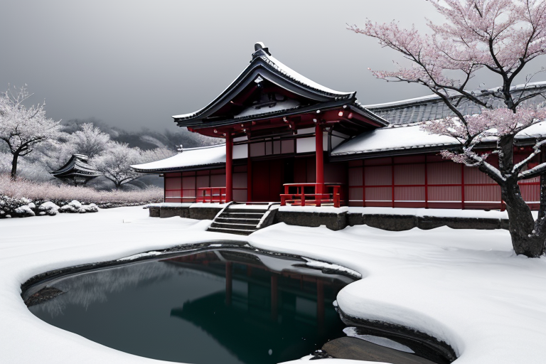
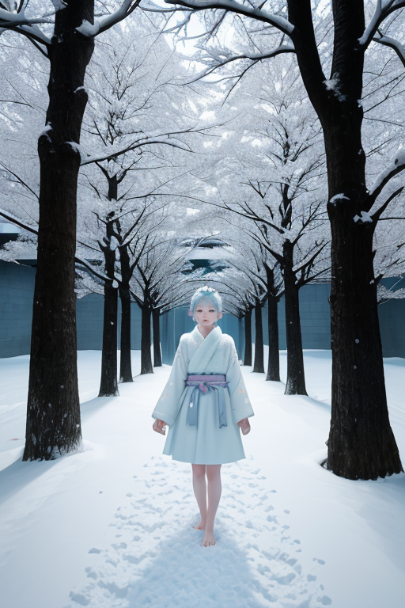
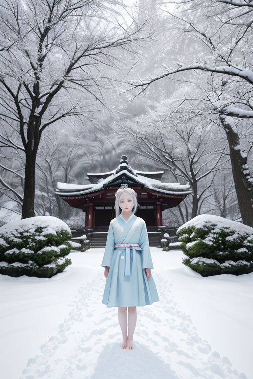
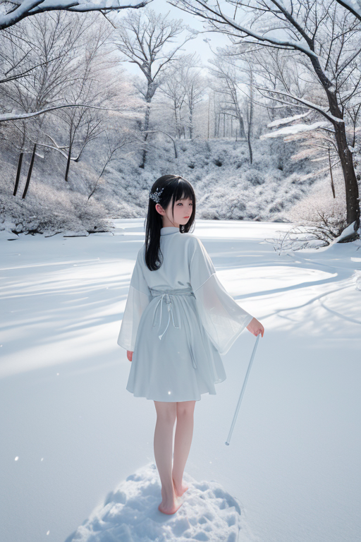

第一章 現実の秋田
あなたはまだ気づいていない。この土地にも、王がいることを。
角館武家屋敷の黒塀に、今年も雪が積もる。枝垂れ桜は冬芽を硬く閉じ、静寂が重く、深く、この町を満たしている。訪れる人はその美しさに息を呑むが、地に住む者は知っている。この静けさの底で、何かが、ずっと眠っていることを。それは災害というより、この土地そのものの「質」だ。長く、厳しい冬。雪に閉ざされる時間。その沈黙は、時に安らぎであり、時に逃げ場であり、時に、封じ込められた何かのうめきに聞こえる。
田沢湖は深青の鏡のように凍りつき、その透明度は底知れぬ闇を映す。湖面の下、かつて辰子姫が封じたと伝わるものは、今も蠢いているのか。雪はすべての音を吸い込み、すべての痕跡を覆い隠す。きりたんぽの鍋の湯気、かまくらの仄かな灯りだけが、かすかな生の証しだ。この土地の沈黙は、単なる無音ではない。何かを抱え込み、耐え、そして守るための、厚い壁なのだ。

第二章 歪みの兆候
男鹿半島の冬の海は鉛色に濁り、波は岩を鈍く打つ。なまはげの面を被った者たちが家々を巡る夜、その叫びは単なる脅しではない。かつて佐竹藩が統治したこの地に根付いた、人々の内なる「悪」や「怠惰」を外へと掻き出す儀式。それは、より大きな歪みがこの地に蓄積するのを、古来より防いでいた。
雪王アキタリア・ネージュは、角館武家屋敷の枝垂れ桜が雪に埋もれる庭に立っていた。彼の足元では、妖精ナマハルが仮面のごとく無表情で地脈を監視する。ここ数日、微細な振動が増している。地震の前触れというより、むしろ「封印」そのものの軋みだ。田沢湖の底の闇、横手のかまくらに封じられた無数の願い、乳頭温泉の湯煙の奥に潜む地熱のうねり。雪による静謐な封じ込めが、どこかで緩み始めている。
「主よ」と、控えめな声で主席妖精ネージュリィが囁く。「歪みの波長が…『恐れ』の成分を増しています」
王は答えず、純白の手のひらをかざした。掌から微かに漂う淡青の光が、降り積もる雪片と共に、地面に染み入る。調整は続けられる。だが、この沈黙が単なる現状維持の逃避に過ぎないのではないか。その疑念が、初めて雪のように冷たい感情として、彼の内側に降り始めた。
第三章 王の葛藤
田沢湖の深碧の水は、冬でも凍らないという。その湖畔に立ち、アキタリア・ネージュは己の内面を見つめた。湖面は鏡のように静謐だが、その底には火山性の熱源が潜む。彼の内側も同様だった。永年の沈黙と調整は、確かに歪みを封じ込める力であった。しかし、封じ込めたものは消えたわけではない。なまはげの仮面に込められた「恐れ」のように、土地に染み付いた感情は蓄積し、濃縮されていく。
「主のため息が、今日は少し重い」とネージュリィが雪のように降り立った。彼女の存在は常に感情を沈静化するが、今は逆に、王自身が内に抱える「重さ」を自覚させるだけだった。
解放すれば、制御不能な雪崩を招くかもしれない。だが、このまま封じ続けることは、やがて来る更大な歪みへの無策ではあるまいか。竿燈のように、危ういバランスの上に光を掲げ続ける現在。彼は初めて、自らの沈黙が「力」であることへの確信を、ほんの少し揺るがせた。

第四章 封印の記憶
角館武家屋敷の枝垂れ桜は、雪に埋もれて静脈のように枝を広げていた。その下で、ナマハルが仮面を外した。その下には、何もなかった。空虚そのものが、彼の顔だった。
「我々は『恐れ』を制御するために生まれました」と、声だけが虚空から響く。「佐竹藩の苛烈な統治。厳冬の飢餓。人々の恐れは、『なまはげ』という形で仮面に封じ込められ、祭りとなって解放される。この地の歪みは、常に『封じる技術』で調整されてきたのです」
ネージュリィが雪片を掌に載せた。「感情を封じることは、否定することではありません。雪がすべての音を吸い込むように、一度すべてを沈静化し、浄化する時間。それが、この王国の力です」
王は、自らの沈黙が単なる無為や逃避ではなく、この土地が長年かけて培ってきた、恐れや激情を一度受け止め、昇華するための「器」であったことを悟った。力とは、放出することだけではない。すべてを内に受け留め、腐らせず、静かに変容させることも、力なのだ。

第五章 微調整と余韻
角館武家屋敷の枝垂れ桜は、静かに雪を纏っていた。アキタリア・ネージュは、その一本の老木の前に立つ。掌を幹に触れ、王国全土に張り巡らされた「雪封印」の微細な亀裂を、一つ一つ修復していく。歪みの調整は、派手な奇跡ではない。雪解けの速度を百分の一秒遅らせ、地面の凍結深度をミリ単位で浅くし、家屋の屋根に積もる雪の重さを、ほんの少し軽くする。すべては、感知されることのない、沈黙の微調整だ。
しかし、王は感じていた。この修復が、自らの「存在」を少しずつ削り取っていることを。感情を内に封じ込め、昇華させる器として機能するとは、すなわち、自らがその感情の媒体となること。雪がすべてを浄化するように、彼もまた、土地の恐れや悲しみを静かに吸収し、自らの内で無害化していた。それは逃避ではなく、受容という能動的な力だった。
彼は、やがて自らも、この静謐な雪のように解けて消えていくかもしれないという予感に、淡い郷愁を覚えた。それでも、眼下に広がる田沢湖の深い碧のように、この沈黙を守り抜く。次のなまはげの季節まで、次の竿燈が揺れる夏まで、この土地の静かな鼓動を、微調整し続けるために。
あなたの町にも、王がいる。